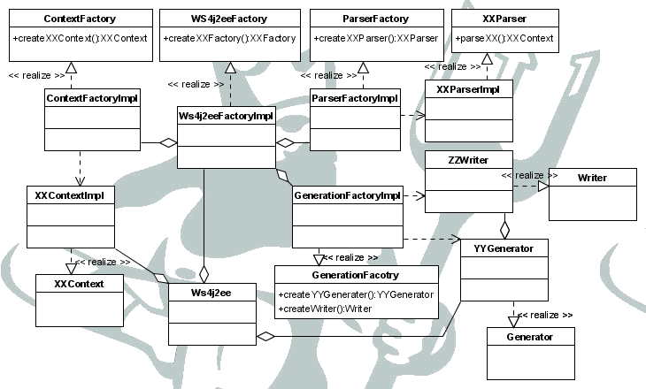
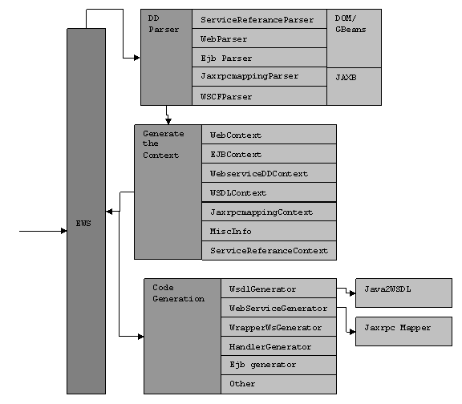
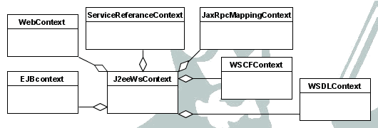

Interestingly enough the architecture of the tool can be explained in the following Diagram.
Figure: Ws4J2ee class composition
The tool consists of three types of classes. They are Contexts, Parsers, and Generators. They are as a groups named as the XXContext, YYGenerator, XXparser in the Diagram. The Context is run time representation of the Deployment Descriptor or a module. The parser will parse what ever the actual representation of the module and generate the Context associated with the Module. Then the Generator use information in the Contexts and Generate the Deployment Descriptor, Java classes act.
Each object is representing by the interfaces and there actual representations are hidden behind the Factory classes “XXFactory”. There is a Factory that Generate those factories and it is accepts in to the Ws4J2ee class (tools main class) as a parameter. Using that the Behavior of the tool can be altered programmatically without changing the code of the original tool.
Figure: the components of the Project
The Diagram shows the much more details structure of the Ws4J2ee tool. It shows the name of the each XXContext, XXParser and YYGenerator. Furthermore its shows the how the JAXB, Java2WSDL and the Jaxrpc mapper is used.
The communication of between the different parts of the code, especially between the above two part is done via a single object called J2EEWebserviceContext. This object followed the “Mediator Patten” without the Observing. It is passive and has the all the information collected through out the execution of the Programme and it is passed around the Programme. End of the parsing of the Input artifacts the J2EEContext has all the information populated inside itself, and then the code generation modules will make use of the J2EEWebserviceContext to get the required information.
Figure: Composition of the J2EEWebserviceContext
The J2EEWebserviceContext or “the Context” is made up of seven parts.
Each “XXContext” has set of interfaces and the actual implementations of the each context is Hidden behind the ContextFactory which uses the “Factory Patten”.
The EWS encounter a six deployment descriptors and one java class to parse. The java class is parsed by the Java2WSDL module and the WSDL context is passed in to the Context.
Among the six deployment descriptors there are two deployment descriptors added to the JSR109, they are webservice.xml file and the jaxrpc-mapping file. For those two we are using (Java API for XML binding) JAXB to parse them.
One XML file is a WSDL file and it is parsed by the Jaxrpcmapper which is an extension of WSDL2Java and Java2WSDL of axis.
To parse the web.xml file and ejb-jar.xml and the service references the tool use DOM for the time been. We are considering possibility of using Geronimo DD parsing technique. (Use the method standalone, maybe we can get the information from Geronimo when our tool is used inside Geronimo).
All the parsers are such that they are independent and they can be easily replaced by another parser that implements the required interfaces. All the information are populated in to the context and in the case of WSDLContext and JaxrpcMappingContext.
The populated information is wrapper by Adapters to adept for the “XXContext” interfaces using the “Adepter Patten”.
The Code generation framework is composed of the two types of Objects called the Generator and Writers. The Generator represent a code module that take care of the generating a module. The Generator may have one or more Writers. Each writer will generate a single file. The code generator module is composed of number of Generators.
Each concrete Writer and the Generator is hidden behind the Generator factory and the Writer factory. The framework is independent of the implementation of each writer and Generator.